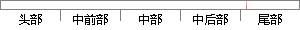

对应像素的权 重 分别为和， 那么 融合图像可表示为：
片段位置图

相似结果
相似片段：
图像融合方法，它将两幅待融合图像对应像素的灰度值进行加权平均，从而得到融合图像。假设相邻的两幅图像为和，重叠区域表示为，设与重叠区域对应像素的权值分别为和，则融合后图像可表示为： （4-19） 其中要求，，且。我们通过渐入渐出算法[6]确定和的值，设两幅待融合图像的重叠宽度为，重叠区域的左右边界分别为和，取： （4-20）
| 对比库： | WriteCheck云资源库 |
| 来源： | www.yangsky.com 查看来源 |
| 发布时间： | 2014-01-18 |
| 相似率 | 87.5% （严重抄袭） |